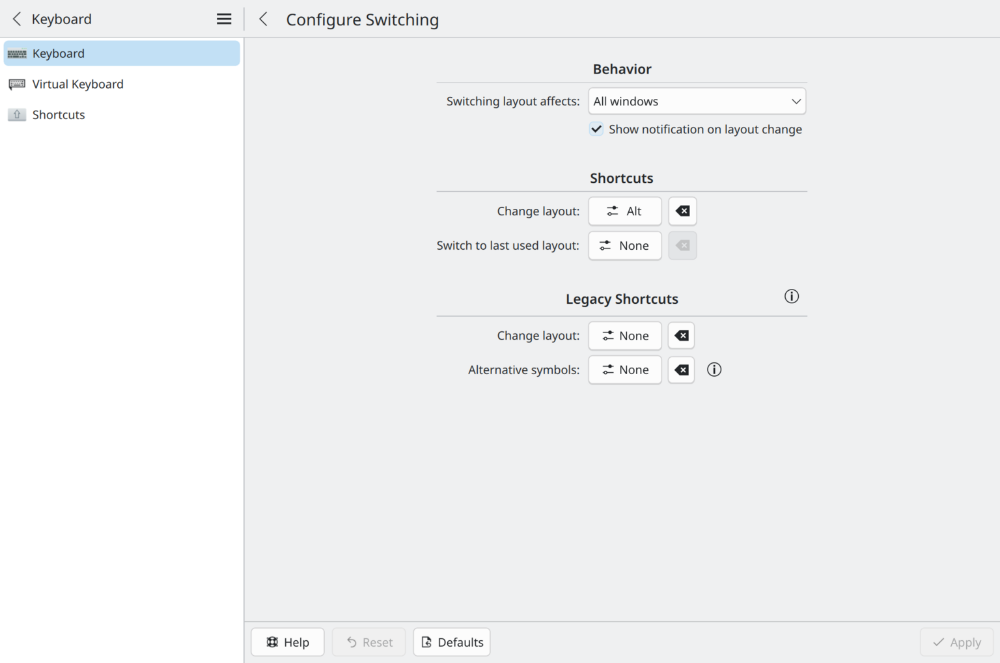

Goal: I wanted to be able to switch between German and English characters without the use of KDE's character selector, which grows laborious for long passages in a second language.
With Debian trixie as of 3/2025, the EurKEY layout no longer is shipped with Debian, but system admins can download it from the EurKEY website.
After installing the eurkey.deb package, navigate to the main Keyboard settings window. Move the "Enable" slider to the right and click "Add." Choose EurKey.

Set the "layout shortcut" via the "Configure Switching..." page and the "Shortcuts . . . Change layout" button. That's it!
Note that installing the German locale is not necessary. EurKEY is not in fact a locale, but a keyboard layout.


The second language is now enabled in the system, but there is no way to select its characters from KDE.

On Gnome installations of Debian, first install the locale, as noted above. Then add German as an "input source" in the Keyboard section of the Settings menu as show below.

Pick a key, here Right-Alt, as the "compose key."

In order to use the new character, hit the compose key, release it, and then type 'a"' for ä, 'o"' for ö, 'ss' for ß and 'u"' for ü as described at StackExchange. Likely there is a way to use the "3rd-level" shortcut as for KDE, but I have not yet discovered it.